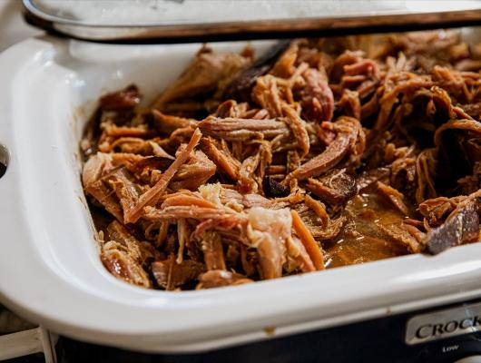

Smoked Pulled Ham
Recipe by: Nicole Johnson
Smoked pulled ham is a rich delicacy that is slow-coocked and smoked into a rich flavorful dish. That few people will get the chance to enjoy. This is a long but rewaring process that deserves the time and patience needed to make it just right. Try it and I promise you won't be disappointed!
Ingredients
- Ham
- Dijon mustard
- Brown sugar
- Granulated Garlic
- Onion Powder
- Ground Cloves
- Hard Apple Cider
- Apple Jelly
- Apple Cider Vinegar
- Stone Ground Mustard
This link is also where I got the image